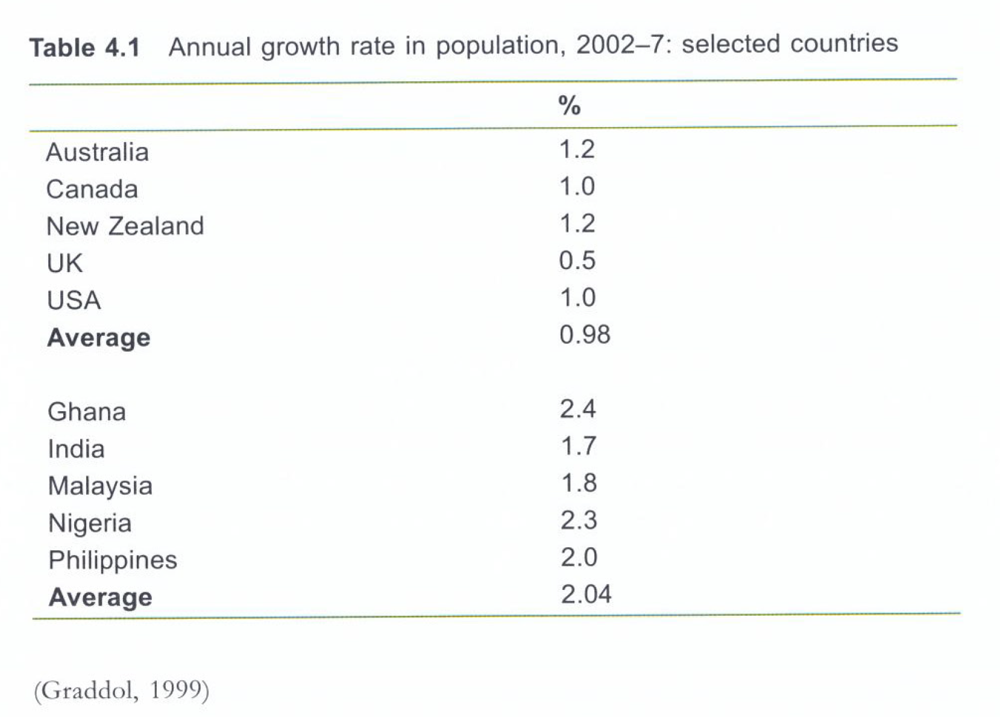

Statistics on Global English
Statistics on Global English revolve about language speakers and speaker base growth. Translating linguistic experience (language use) into statistics is challenging, often relying on guess work.
First language users
First language speakers estimated at 400 - 500 millionAre Pidgins and creoles varieties of English or separate languages?
Second language users
How to define command of English?All language users
Considering all levels, 1500 - 2000 million speak EnglishPopulation growth and speaker base

Ratio between native and non-native speakers: 1:4
Population growth rate about 2x in non-native speaking countries. This trend continous.